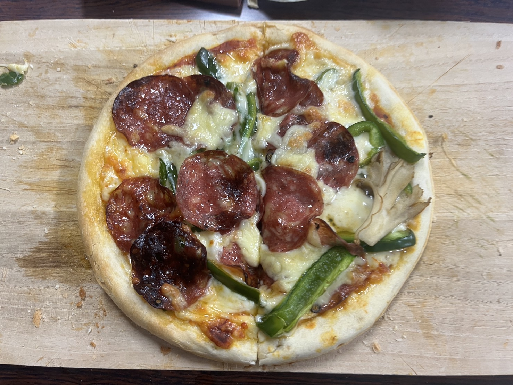

ニュース
- 2025/1/30 仲野研究室のホームページを作りました!
- 2025/1/30 D3の越智くんの量子渦の素励起に関する研究が学術論文Physical Review Aに掲載されます。
- 2025/1/30 2月13,14日に理工学部2号館共通講義室1において卒論修論会の発表があります。
- 2025/3/24 3月24日に本研究室の森本さんと赤神さんと西村さんとメルビンさんが卒業しました。
-
2025/4/19 本研究室の越智くんが
研究発表会・研究奨励の会 | 笹川科学研究助成 | 公益財団法人日本科学協会
にて受賞いたしました。
- 2025/8/4 博士課程3年の越智くんの公聴会が行われました。下の画像はピザパーティーの時の様子。

- 2025/9/6 小松くんが東大物性研で開かれた
熱場の量子論とその応用
でポスター発表を行いました。
- 2025/9/19 D3の越智くんが博士課程を卒業しました。引き続き、高知大学で短期研究員として在籍します。